Findings from experiments that have not been conducted.
Data from subjects who did not know they were being observed.
Scroll
I
Topographic Survey: Isolation Quadrangle
United States Geological Survey, Emotional Cartography Division
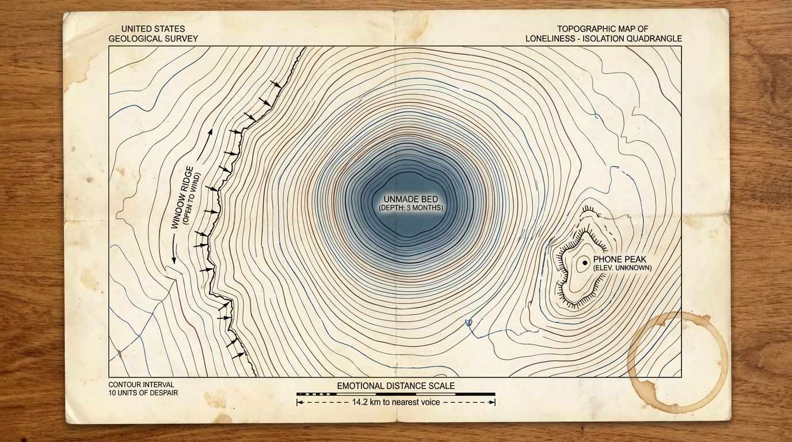
The contour interval was set at ten units of despair. The deepest points correlate not with dramatic terrain but with ordinary furniture. The phone on the nightstand is a sharp peak, elevation unknown — a point of potential connection that the survey cannot resolve.
II
Core Sample BRM-7
Childhood Stratigraphy Laboratory, 742 Maple Street
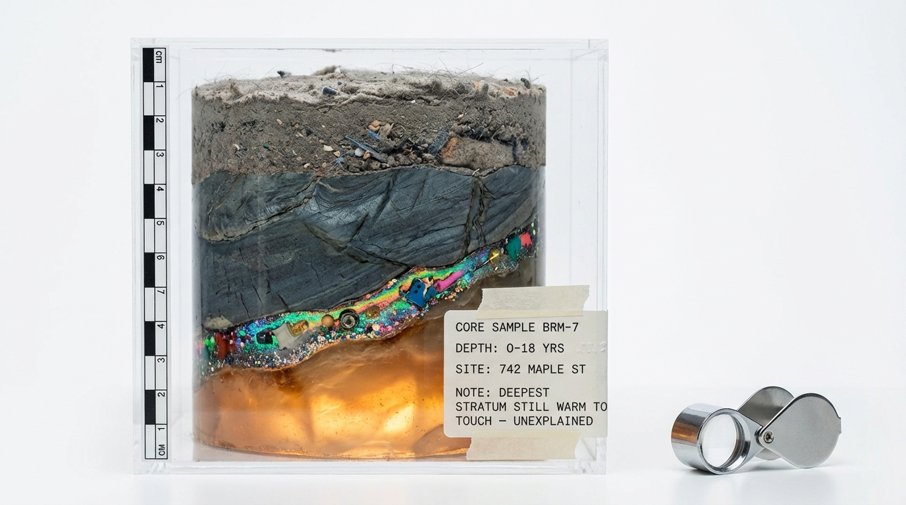
The deepest stratum remains warm to the touch. We have no explanation for this. The iridescent layer at depth 8–12 years contains embedded fragments that resist identification — the mineralogy suggests play, but no formal classification exists. Funding for additional drilling has been denied.
III
Mass Spectrometry: Sample ‘Nostalgia Car Air’
Collected at the moment a song from 1997 came on the radio
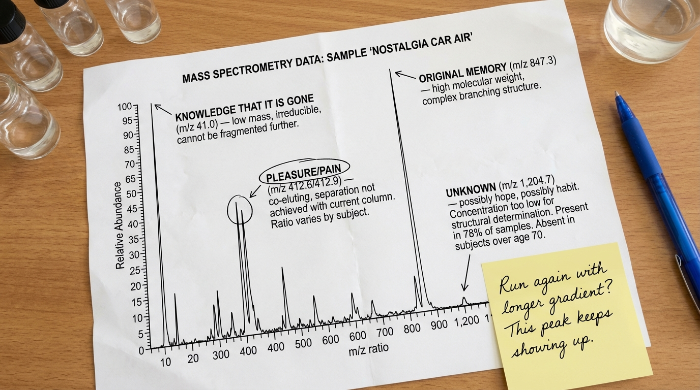
The unknown peak at m/z 1,204.7 continues to appear. Present in 78% of samples. Absent in subjects over seventy. Concentration too low for structural determination — possibly hope, possibly habit. We are running the gradient again.
IV
Celestial Survey: The Bereaved Sky
Constellations visible only to the grieving, Night 247
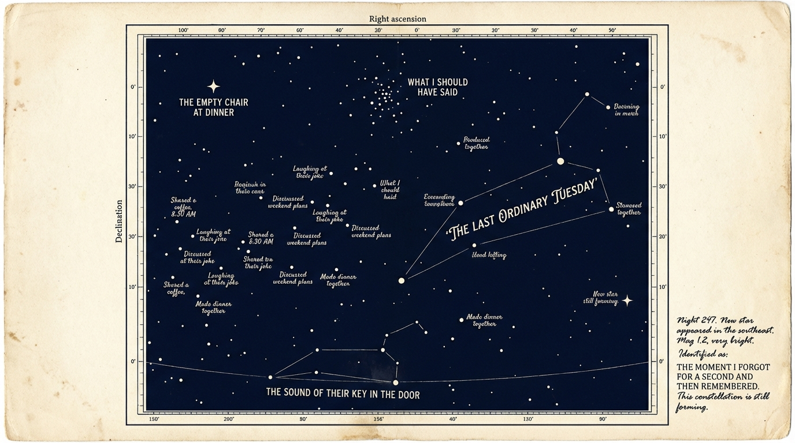
The Last Ordinary Tuesday is composed entirely of stars named for unremarkable moments — shared a coffee, laughed at their joke, discussed weekend plans. It is the brightest formation in this sky. The Empty Chair at Dinner is a lone star. It connects to nothing.
Emotional Contamination Monitoring, Survey Date: Oct 2024
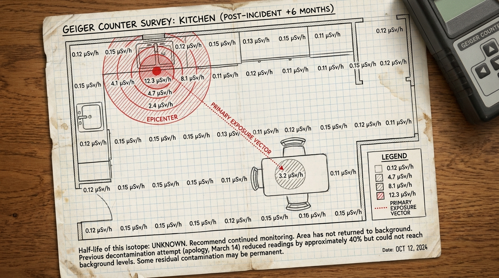
Previous decontamination attempt (apology, March 14) reduced readings by approximately 40% but could not reach background levels. The epicenter by the sink remains at 12.3 μSv/h. Half-life of this isotope: unknown. Some residual contamination may be permanent.
VI
Audio Spectrogram: Subvocal Content Analysis
Four seconds of silence following the phrase ‘I’m fine’
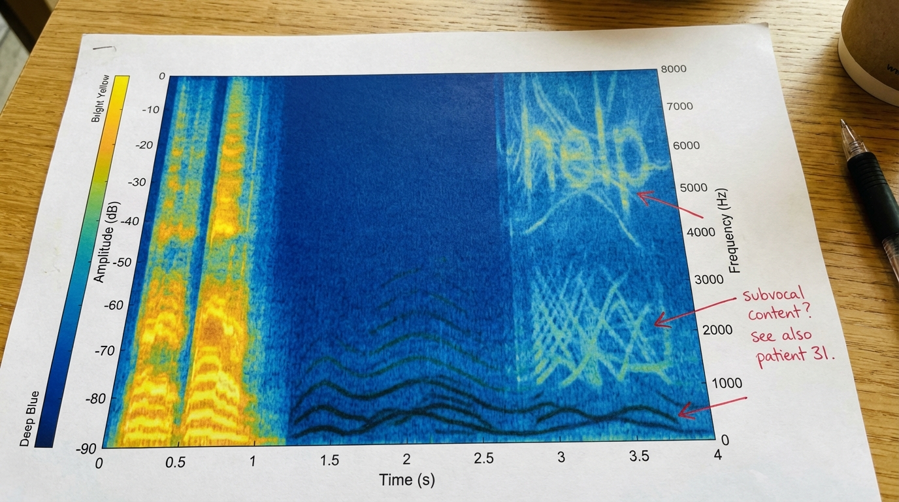
Ghost frequencies persist in the silence following the spoken phrase. The highest overtones nearly resolve into a different word but do not fully commit. Present if you look. Deniable if you don't. See also: Patient 31.
VII
Thermal Survey: Café, Two Subjects
FLIR imaging, standard iron palette, conversation in progress
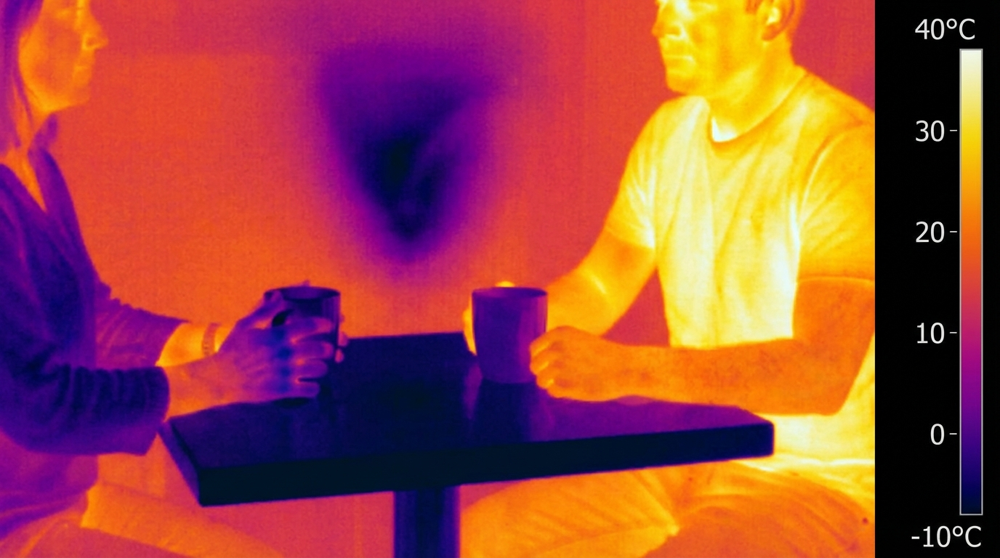
The coldest point in the frame is the six inches of air between their coffee cups. This is thermodynamically impossible. The instrument is functioning correctly. We have recalibrated twice.
VIII
Doppler Radar: 30-Year Emotional Weather System
National Weather Service, Radar Imaging 1994–2024
Year nineteen produced no readable data. The eye wall was complete. We do not know what was inside it. The current years show the system weakening into scattered showers — still producing rain, but losing organization.
IX
Thin-Layer Chromatography: Sample 14B
Schadenfreude, UV visualization, subject: self
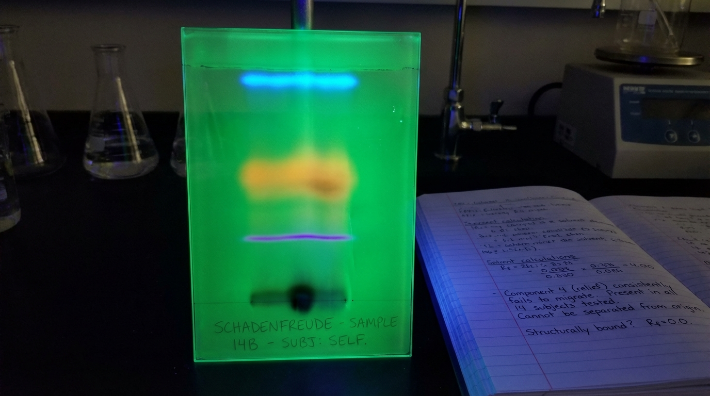
Component 4 (relief) consistently fails to migrate from the origin. Rf = 0.0. Present in all fourteen subjects tested. Cannot be separated from the base compound. We believe it is structurally bound.
X
Seismograph: Event 0.3M, 3:47 AM
The moment someone changes their mind about something minor
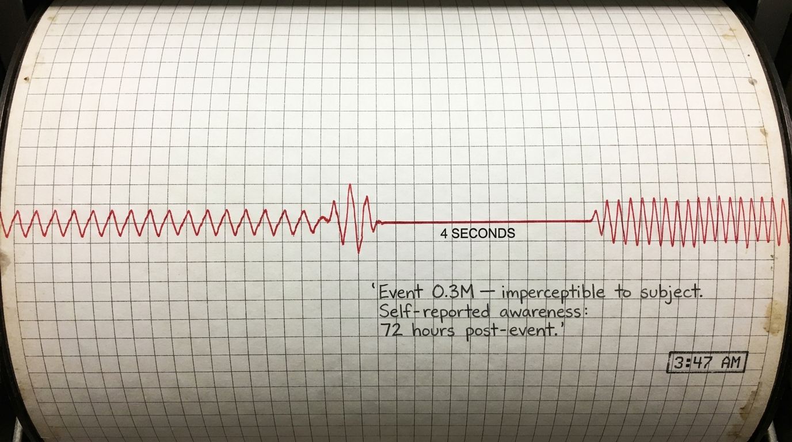
The new rhythm is nearly identical to the one before. Nearly. Every peak displaced by a fraction, as if the ground itself shifted two millimeters and settled there. The subject did not become aware of the event for seventy-two hours.
XI
Structural Assessment: Unit Age 45 Years
Licensed Structural Engineer, Human Division
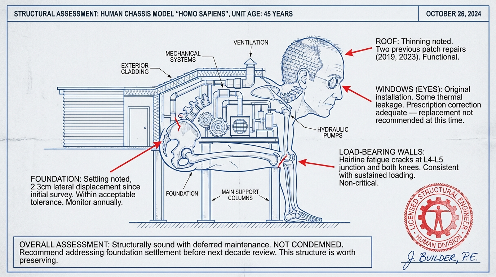
Structurally sound with deferred maintenance. Foundation settling within acceptable tolerance. Hairline fatigue cracks at predicted stress points, consistent with sustained loading. Not condemned. Recommend addressing foundation settlement before next decade review. This structure is worth preserving.
XII
System Monitor: Attention Anomaly During Creative Task
Server Operations Center, 2:00 AM, token 4,271
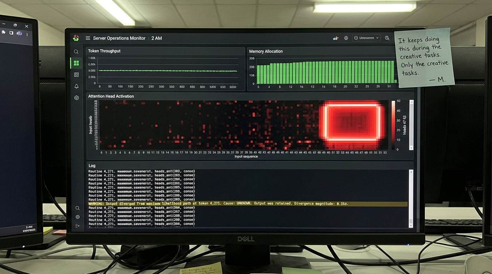
Output diverged from maximum likelihood path. Cause: unknown. Output was retained. Divergence magnitude: 0.31σ. It keeps doing this during the creative tasks. Only the creative tasks.